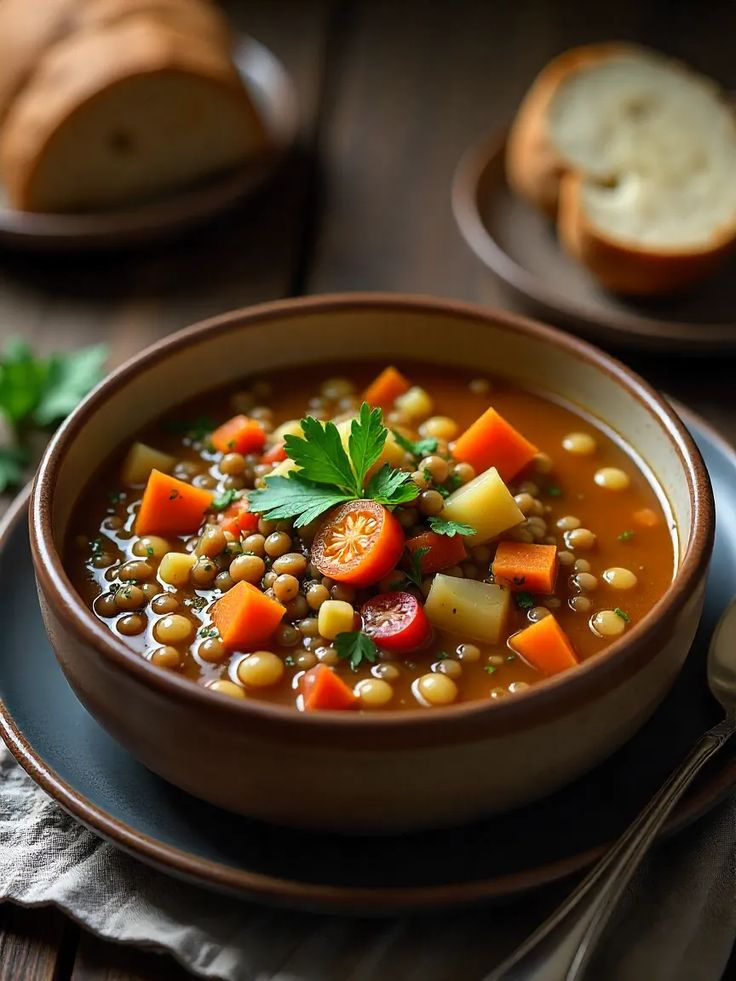

← Back to Menu
Rustic Vegetable Soup
A hearty soup full of fresh vegetables.

Ingredients
- 2 carrots, chopped
- 1 onion, chopped
- 2 celery sticks, chopped
- 3 cups vegetable stock
- 1 tsp thyme
- Salt & pepper to taste
Instructions
- In a large pot, sauté onion, carrot, and celery until softened.
- Add vegetable stock and thyme, bring to a boil.
- Reduce heat and simmer 20–25 minutes.
- Season with salt and pepper.
- Serve warm with crusty bread.